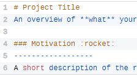

What is a README File?
A README file is usually the first document people see when they visit a
project. It provides an overview of the project, explains its purpose,
gives installation instructions and helps users understand how to use
the software.
A well-written README makes it easier for developers and contributors
to understand and work with a project.
Learn more about README files

What is a Wireframe?
A wireframe is a simple visual representation of a webpage or
application. It focuses on structure and layout rather than colours,
images or final design elements.
Fun fact: designers also use wireframes to plan where content, navigation
and key features will appear before development begins.
Learn more about wireframes

What is a Git Branch?
A Git branch is an independent line of development within a Git
repository. It allows developers to work on new features, bug fixes
or experiments without affecting the main version of the project.
Once the work is complete and tested, the branch can be merged back
into the main codebase.
Learn more about Git branches